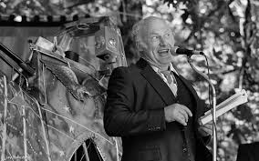

Ken Kesey, Demon Box (1986)
Content warning:
Animal cruelty, death, incarceration, mental illness, substance abuse, violence
Synopsis
Demon Box is a hybrid collection of stories, essays, memoir, and travel writing by Ken Kesey. Framed by the image of a “demon box.” a mental container for fears, memories, and obsessions, the book follows Kesey through a series of adventures. Through encounters with eccentric characters, experiences on the road, and meditations on freedom, creativity, and American culture, Kesey explores the tensions between individuality and society. Rather than a traditional novel with a single plot, Demon Box is a kaleidoscopic of Kesey’s imagination and worldview.
Essay
Ken Kesey spent much of his adult life in rural Oregon, particularly in the Willamette Valley near Pleasant Hill outside Eugene. By the time Demon Box was published in 1986, he had become one of Oregon's most recognizable literary figures. While readers may know him best for One Flew Over the Cuckoo's Nest and his role in the 1960s counterculture movement, Demon Box offers a more personal look at the experiences and ideas that defined him. Throughout the collection, Kesey repeatedly returns to themes associated with Oregon life like connection to the land, skepticism toward authority, and community driven life.
Although Demon Box is not set entirely in Oregon and often travels far beyond the state's borders, it is deeply connected to Oregon and its literature because it reflects the values, landscapes, and communities that shaped Ken Kesey as both a writer and a public figure. The book demonstrates how Oregon can function not only as a physical setting but also as a cultural perspective through which the world is viewed. Kesey's stories and reflections reveal a strong attachment to the state's rural traditions, independent spirit, and complex relationship with mainstream American society.
Demon Box engages with several aspects of Oregon geography and community. Even when individual stories take place elsewhere, Kesey writes from the perspective of someone rooted in the Pacific Northwest. In "Run into the Great Wall," Kesey reflects on travel, cultural encounters, and the search for personal freedom, themes that connect to the independent spirit often associated with Oregon culture. His descriptions of forests, rivers, rural roads, and small-town life reflect landscapes familiar to many Oregonians. The agricultural communities of the Willamette Valley and the independent culture associated with rural Oregon help shape the attitudes and values expressed throughout the collection. Oregon appears less as a single setting and more as an underlying presence that informs how Kesey interprets the people and events around him.
Historically, Demon Box also reflects Oregon's place within broader American cultural movements. Kesey became famous as a leader of the Merry Pranksters, a group that challenged social conventions during the 1960s. However, unlike narratives that focus solely on urban counterculture, Demon Box reveals how Oregon's frontier traditions contributed to his outlook. Stories such as "The Day After Superman Died" explore themes of individuality and resistance to conformity, while many of the autobiographical sections revisit experiences that shaped Kesey's distrust of authority. The state's history of self-reliance and distance from major centers of power helped foster the independent mindset that appears throughout the collection. In this sense, the book connects Oregon's regional identity to national conversations about freedom, creativity, and resistance to conformity.
I think Demon Box is particularly valuable as a work of Oregon literature because it expands the definition of what regional writing can be. Many readers expect Oregon literature to focus directly on local settings or historical events. Kesey instead demonstrates that a writer's relationship to Oregon can shape their voice and worldview even when their stories travel across the country. The book suggests that Oregon literature is not simply literature that takes place in Oregon but rather literature influenced by the state's landscapes, communities, and cultural traditions.
The collection also occupies an important place within the canon of Oregon literature because it bridges multiple traditions. Kesey combines elements of memoir, journalism, fiction, and travel writing, creating a form that reflects the experimental spirit often associated with Pacific Northwest writers. His willingness to blur genres and challenge conventional storytelling mirrors the independence and creativity that many readers associate with Oregon culture. As Kesey writes through his recurring narrator Devlin Deboree, the collection constantly shifts between observation, memory, and imagination, reinforcing its unconventional structure.
For me, Demon Box stands out because it captures a version of Oregon identity that feels both specific and expansive. Rather than presenting the state as a backdrop, Kesey shows how a place can shape a person's imagination. The collection demonstrates that Oregon's influence extends beyond its physical borders through the experiences, values, and stories carried by those who call it home. As a result, Demon Box remains an important example of how Oregon literature can explore regional identity while engaging with larger questions about culture, freedom, and personal expression.
Author Bio
Ken Kesey (1935–2001) was an American novelist, essayist, and cultural figure best known for his novel One Flew Over the Cuckoo's Nest (1962), which became a landmark work of twentieth-century American literature. Born in La Junta, Colorado, Kesey moved with his family to Springfield, Oregon, as a teenager. He attended the University of Oregon, where he studied journalism and developed an interest in writing and theater.
While enrolled in Stanford University's creative writing program, Kesey participated in government-funded drug studies that influenced both his writing and his later involvement in the 1960s counterculture movement. He became the leader of the Merry Pranksters, a group known for its psychedelic bus trips and experimental approach to art and community.
Despite his national fame, Kesey maintained strong ties to Oregon and spent much of his life on a farm near Pleasant Hill outside Eugene. Oregon's landscapes, rural communities, and independent spirit shaped many of his works, including Sometimes a Great Notion and Demon Box. Today, Kesey is widely regarded as one of Oregon's most influential literary figures.
Further Reading
Ken Kesey, One Flew Over the Cuckoo's Nest (1962)
Tom Wolfe, The Electric Kool-Aid Acid Test (1968)
- Follows Ken Kesey and the Merry Pranksters
